← Back to selected work
Branding Project
Tropical Fusion
Brand and visual designer responsible for building a cohesive identity across print, apparel and digital touchpoints.
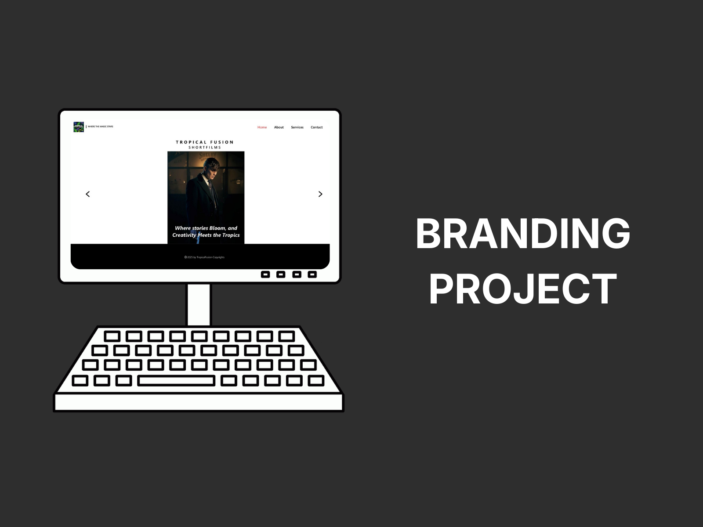
Building a brand system from concept to application.
Tropical Fusion is a branding project focused on a vibrant short-film identity. The system brings together logo direction, typography, color, mood, apparel, stationery and digital applications.
Brand foundation
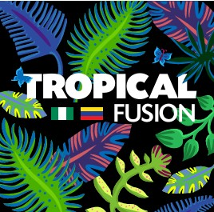
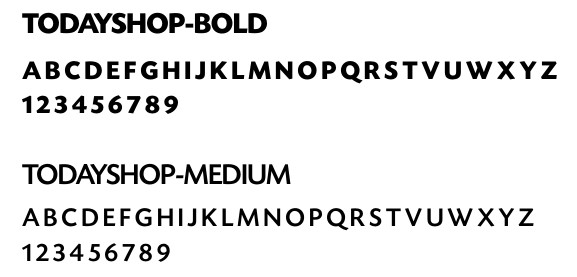
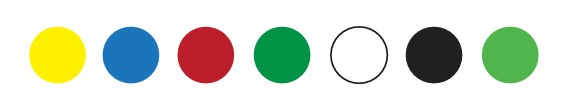
Visual direction
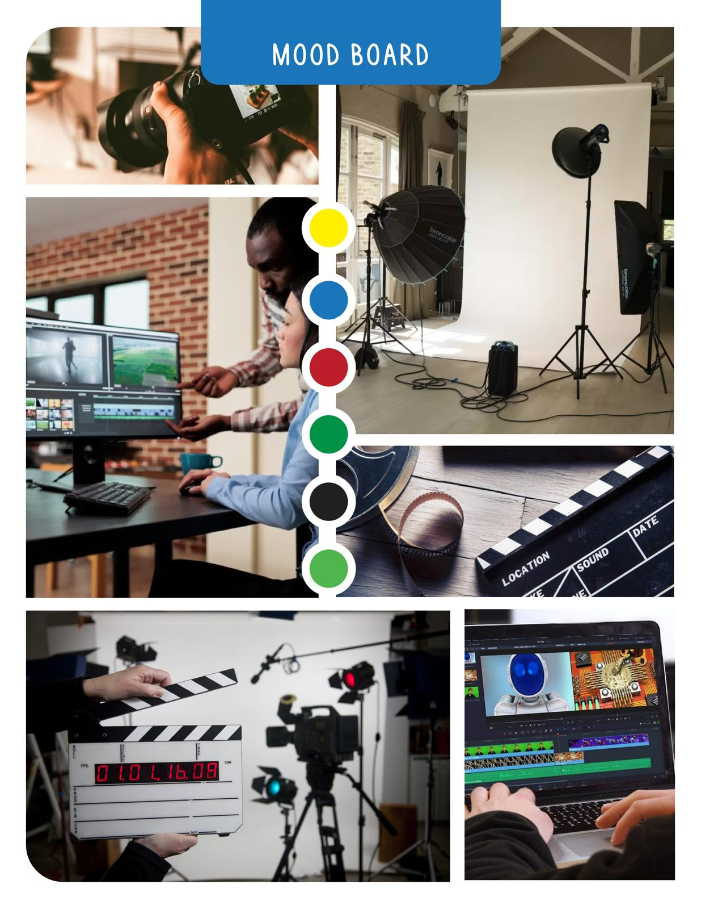
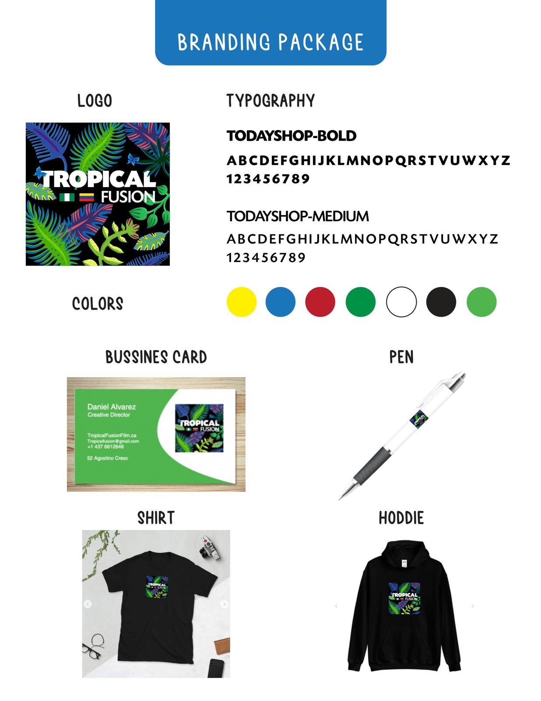
Applications
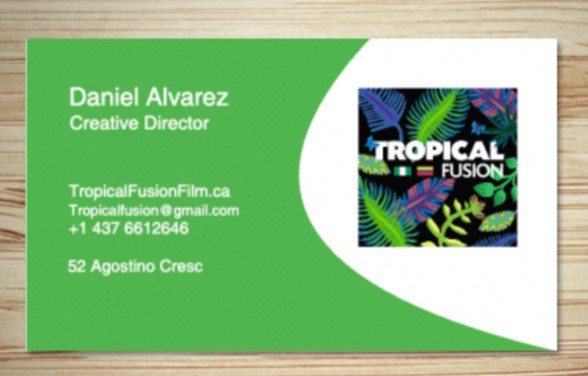
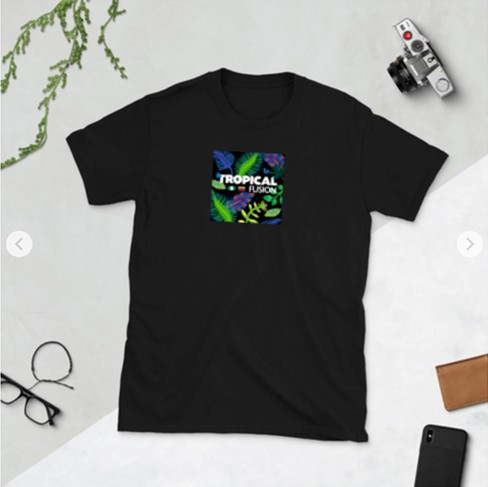
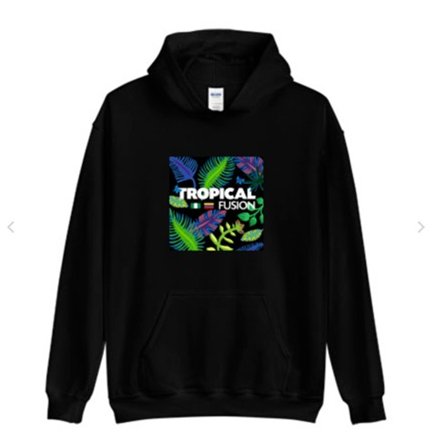
Digital touchpoints
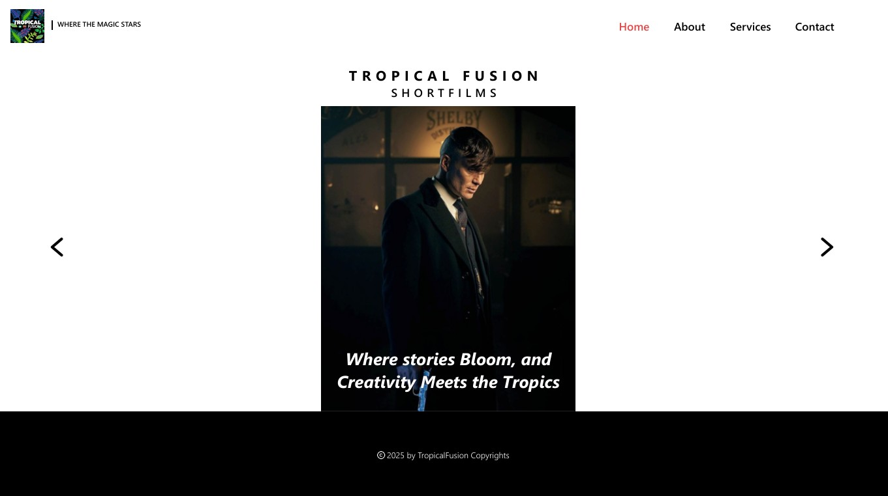
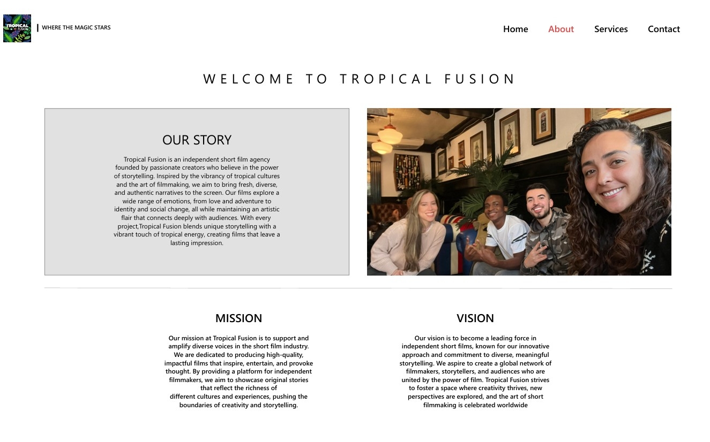
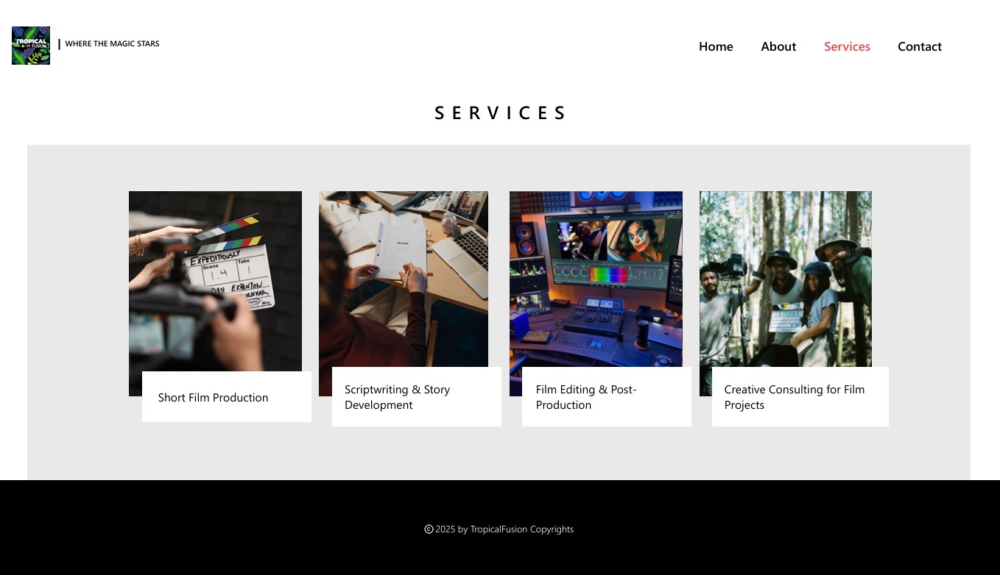
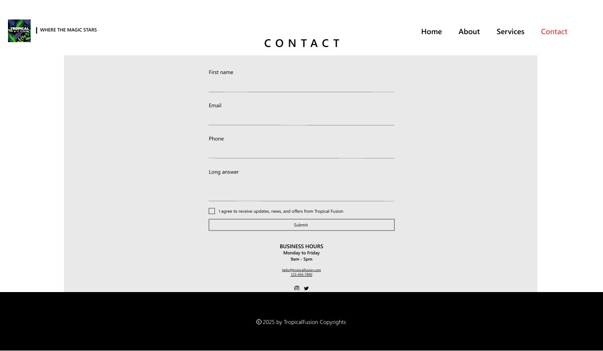